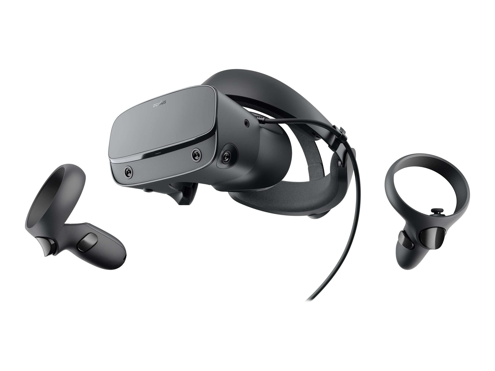

Virtual Reality
How it does it's magic
For virtual reality to work it is necessary to trick our brains into thinking that the content seen in the vr world is real which is told not to be a simple task, but is still possible and which is the reason people can use vr today. The thing about VR is that it needs 2 things to work, which are 1st a place to generate the content and 2nd is a place for the content to be seen, and these are typically the headset and the computer/device working together to achieve VR.
VR is meant to be realistic as possible so to achieve this the hardware needs a few things to make it look realistic, so what the devices/hardware rely on are measurements based on...
- image resolution,
- field of view,
- refresh rate,
- motion delay,
- pixel persistence,
- audio/video synchronization.
In the End these measurements are necessary to help the hardware have the highest quality possible for a more realistic feel to it.